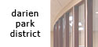

|
|  |
|
MAPLE HILL POOL HOUSE The Maple Hill Pool House remodeling was a design/build project with a very tight budget. The owner's two objectives were first: to create a visually stimulating building harmonious with it's heavily wooded site, and second: to be creatively considerate of their limited budget. The existing international style, flat roofed, concrete block building was first built in 1956. The roof and all interior non-load bearing walls were completely removed. The floor plan is organized around two main circulation corridors where the old gang showers were replaced with private shower stalls and all spaces were designed to be ADA accessible. Also a concession stand was added as a convenience to all patrons. The use of open web trusses, skylights, and various wall finishes give the relatively small interior spaces an open airy feeling. A second floor was added over the center section to provide additional storage space. The building's exterior is clad with cedar siding and wood shake roof shingles. These materials were selected due to their contextual quality, durability and low maintenance requirements. |
||||||||||
|